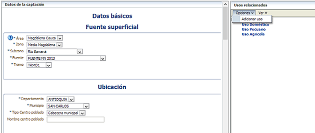

Este formulario le permite editar los datos de una captación registrada en el sistema. Observe que en el panel derecho, a través del menú "Opciones", "Adicionar uso" usted podrá asociar la información de los usos asignados a la captación:
